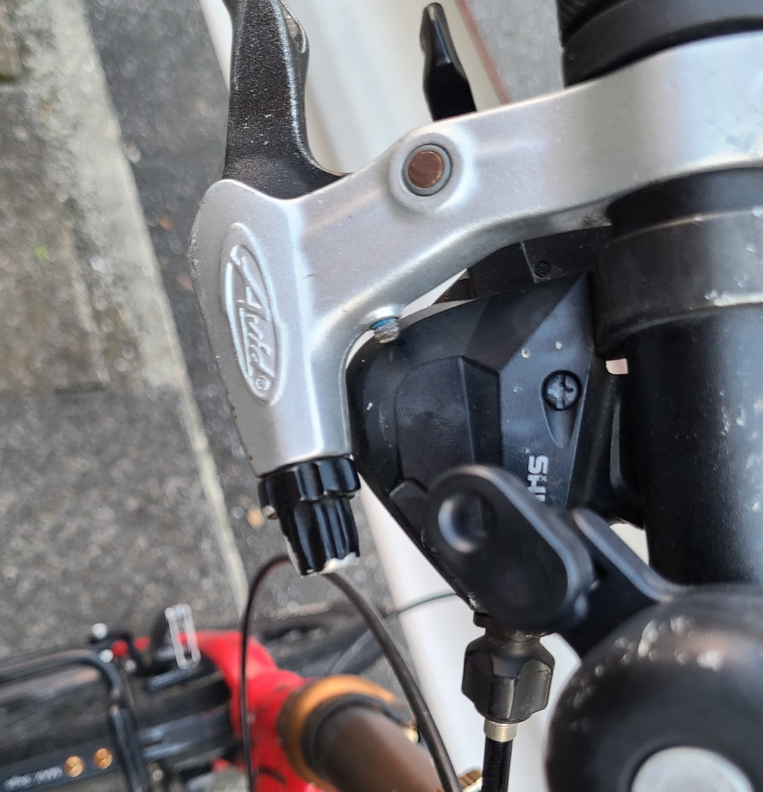
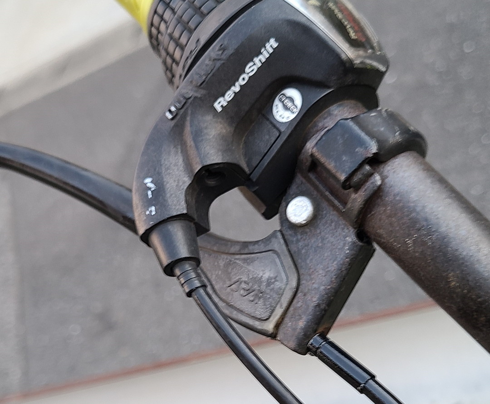
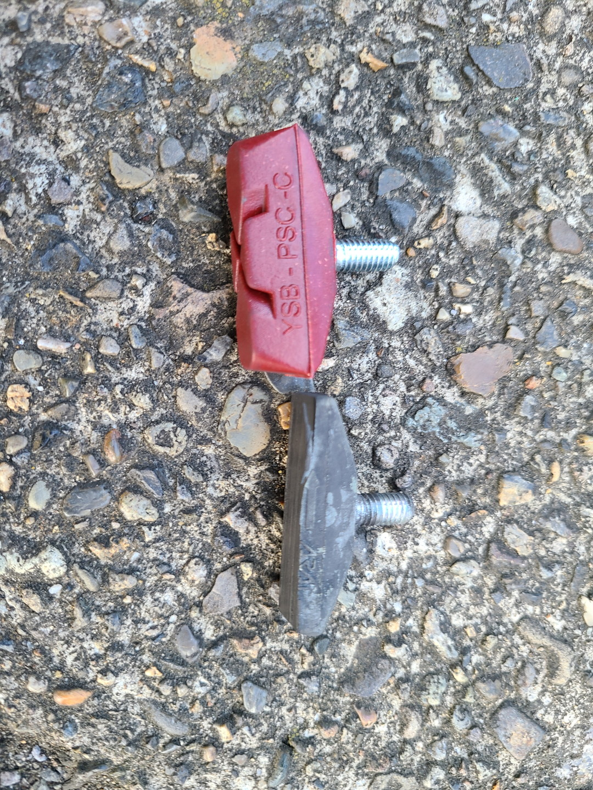
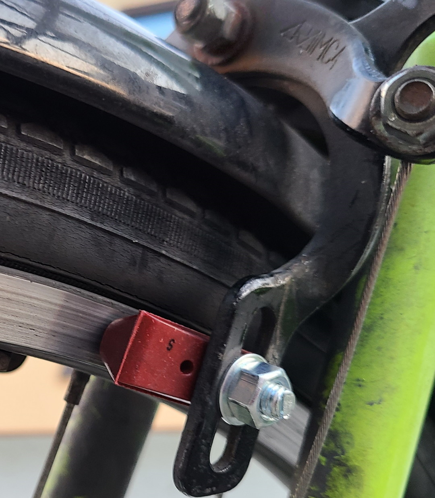

この間ママチャリで出かけてたらいきなり前輪ブレーキが効かなくなってあわや大惨事になるところだった。もう少しでバイクショップのスクーターに当たるところだったから危ない危ない。
さて、このママチャリは自分のではなく家族共用のものであるとはいえ放置しても置けないので原因を確かめることにした。見てみると一目瞭然でインナーワイヤーを固定する部分が錆びてちぎれただけだった。
と、いうことでサイクルベースあさひに行ってブレーキ用のインナーワイヤーを買ってきた。基本ロードバイク用とMTB用の二種類があるがママチャリならだいたいMTB用だと思う。どういう違いがあるのかというとタイコと呼ばれるブレーキレバーに固定する末端の形が微妙に違う。ちなみに両端にそれぞれのタイコが付いてる商品もあるので心配ならそういうのを買っておけばいい。（ぶっちゃけ550円であさひにも売ってる）
さてインナーワイヤーを買ってあとはワイヤーカッターで長さ調整して終り！となるはずだったのだけれど……。考えてみればクロスバイクやミニベロのVブレーキばかりでママチャリのキャリパーブレーキはいじったことなかったので苦戦した。
説明してるサイトを見つつ調整するのだけれど、どうもうまくいかない。ブレーキレバーの戻りがあきらかに悪い。うなりながらよく見てみると、

え、ﾅﾆｺﾚ。……あ、アウターワイヤーの内部が出てきてるのか！（画像は切断済み）ブレーキレバーを引くたびにニョキニョキニョキニョキ……出てくる出てくる。
原因は単純でアウターワイヤーを使いまわしたから。ケチってアウターくらい別に使いまわしていいでしょ…って思ったらとんでもないことになってしまった。にしても今まで使いまわしたことは何回かあるけどこのケースは初めてなので困惑した。ちなみに買ったインナーワイヤーはこのせいでお釈迦になりましたとさ。いやーケチっちゃだめだね。もう買い直しにいくのもめんどくさいので……。

ミニベロから…

移植！
ちょうどミニベロのブレーキレバーも交換しようと思ってたので良い機会でしょう。
ついでにすり減ったブレーキシューも変える。

赤いのが新しくイオンバイクで買ったやつ。1000円弱だったので割高。
ECサイト覗けば、割安で売ってるので流石にイオンバイクよりはこっちで買うのがおすすめ。（アソシエイト載っけちゃう）
あとは取り付けて完成
というかママチャリのホイールってステンレスとアルミの二種類なのか（一応シューもそれぞれに対応したものが売ってる）。スポーツバイクだとアルミかカーボンかみたいな感じだけど、ステンレスとアルミって見分けるのめんどくさくないか？普段ミニベロばかり乗ってると逆にママチャリの知識が身につかないなぁとおもう今日このごろ。次はブレーキレバーの交換について書こうと思う。まあ大したことしてないけど……。ではまた～。
↓ちなみに交換予定のブレーキレバー